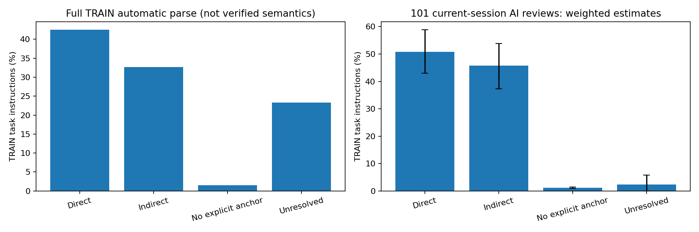

全量自动初筛＋本会话101条AI语义复核；不是人类金标准。关联≠20m定位成功。
中文报告 · 全部22,002条CSV · 自动统计 · 复核校正估计The building is on St Peter's Street near the intersection of Pound Hill and is next to the corner building with a white car parked across the street from it.
按原文目标、具名参照和中间区域核对；与当前分类一致。
The reddish gray building on Pembroke Street between the Kenmare House and Little St. Mary's Church.
按原文目标、具名参照和中间区域核对；与当前分类一致。
Of the two houses at the corner of Aldridge Road and Holford Drive, this is the one further from Holford with a light blue car in front of it.
按原文目标、具名参照和中间区域核对；与当前分类一致。
This is a black car parked on Warkworth Terrace. It is parked near the road that leads up to Parkside Police Station. There is a gray car in front of this car and another gray car behind it.
按原文目标、具名参照和中间区域核对；与当前分类一致。
The black car on Queens Lane behind the white car that is closest to the intersection with Kings Lane.
按原文目标、具名参照和中间区域核对；与当前分类一致。
A light blue car, paked along Eden Street between a white sedan and a black car. There is an empty parking space next to the black car.
按原文目标、具名参照和中间区域核对；与当前分类一致。
The last house with white walls at the end of the Fitzwilliam street road. It is next to the Fitzwilliam house
按原文目标、具名参照和中间区域核对；与当前分类一致。
The white car on Queens Lane that is closest to the intersection with Silver Street.
按原文目标、具名参照和中间区域核对；与当前分类一致。
The gray house on Short Street that is 3 houses to the left of the gray house at the intersection with New Square.
按原文目标、具名参照和中间区域核对；与当前分类一致。
A gray car in a partial section of a white car facing each other, in between the courtyard building and a tree off corn Exchange Street
按原文目标、具名参照和中间区域核对；与当前分类一致。
This is a building with a brown roof located on Granta Place and Mill Lane. Across Mill Lane from this building is University Social Club.
按原文目标、具名参照和中间区域核对；与当前分类一致。
The black car across from the Dokett Building with to black cars on one side.
按原文目标、具名参照和中间区域核对；与当前分类一致。
The tiny silver car parked at the back of the reddish tan parking lot to the right of the Full Circle Events & Exhibitions Ltd.
车位于停车场后部；停车场在Full Circle右侧，修正错误的关系作用域。
The white car parked at the corner of the Anatomy School, parked ahead of a bright blue car.
按原文目标、具名参照和中间区域核对；与当前分类一致。
This white car is towards the edge of the map on lensfield road. It is across the street from the University chemical Laboratory
按原文目标、具名参照和中间区域核对；与当前分类一致。
The end building on Fitzwilliam Street that is across the street diagonally from The Henry Wellcome Building.
按原文目标、具名参照和中间区域核对；与当前分类一致。
The orange brick building with grey roof, two black cars parked at front, on the Thornbury Road.
按原文目标、具名参照和中间区域核对；与当前分类一致。
Center section of a multi-unit building with a gray roof that has its back-end covered in the solar panels, next to the Old Spring building off Ferry Path Road
按原文目标、具名参照和中间区域核对；与当前分类一致。
On The Broadway, this blue car has a white car north and south of it, fifth car from the top.
按原文目标、具名参照和中间区域核对；与当前分类一致。
This is a white car parked on Fitzroy Lane in the vicinity of the building next to the Grafton. The car is facing Grafton West and there is another white car one empty spot over.
按原文目标、具名参照和中间区域核对；与当前分类一致。
The white car parked underneath a tree to the side of the brown building behind trees across from the Beche Road building.
树、棕色建筑等中间参照连接Beche Road；不能把末端across直接附给目标车。
The building on Botolph Lane on the corner of Trumpington Street with the red and gray roof facing the St. Botolph building.
按原文目标、具名参照和中间区域核对；与当前分类一致。
This is a large tall building located at the corner of Ferry Path and Chesterton Road. There are solar panels on the roof and 4 cars in the garden. The building is L-shaped.
按原文目标、具名参照和中间区域核对；与当前分类一致。
The small brown building behind the Silver Street on Trumpington Street.
按原文目标、具名参照和中间区域核对；与当前分类一致。
On Priory Road to the south of Cellarer's Chequer, this white car is across from the Ace Day Nursery building.
按原文目标、具名参照和中间区域核对；与当前分类一致。
This is a large parking area between Fenners Building (Hughes Hall) and the Kelsey Kerridge Sports Centre, Queen Anne Terrace.
按原文目标、具名参照和中间区域核对；与当前分类一致。
The white car that is parked next to another white car in the parking lot across the street from the Perry Barr Bus Depot. It is the one closest to the tree.
车在停车场内，停车场在Bus Depot街对面。
The building on Abbey Road that has a red car in front of it and a blue car across the street.
按原文目标、具名参照和中间区域核对；与当前分类一致。
The last white car along lensfield road. It has another car grey car in front of it.
按原文目标、具名参照和中间区域核对；与当前分类一致。
This building is on Priory Road and it is close to the edge of the map there are a few cars parked in front of this building two black and one silverish
按原文目标、具名参照和中间区域核对；与当前分类一致。
This is the parking area behind the buildings on the corner of Abbey Street and Harvest Way.
按原文目标、具名参照和中间区域核对；与当前分类一致。
The light blue and gray building between the Master's Lodge and Cloister Court buildings.
Master’s Lodge与Cloister Court是两端具名建筑，后缀buildings非新增对象。
The black car on the end of the fourth row of cars in the One Stop parking lot. It's next to the split white arrow on the road.
按原文目标、具名参照和中间区域核对；与当前分类一致。
The gray car in the top right corner of the parking lot of the Bradmore Court building, when viewed aerially with Bradmore Lane to the right.
按原文目标、具名参照和中间区域核对；与当前分类一致。
The gray car at the intersection of Grafton Street and City Road.
按原文目标、具名参照和中间区域核对；与当前分类一致。
This is a white car parked in the parking space in front of James Dyson Building, It is sandwiched between two black cars.
按原文目标、具名参照和中间区域核对；与当前分类一致。
One gray car in between a white car and a black van, parked in front of the Epworth court building next to the Wesley Methodist Church near the edge of the map off King Street
逗号后parked in front of Epworth Court更自然修饰目标车；保留邻车用于实例识别。
White car in a parking lot opposite the Eden chapel along Fair court road. It is at the back.
按原文目标、具名参照和中间区域核对；与当前分类一致。
The red car that is in the first row of cars in the Grafton West parking lot. There is a red car parked perpendicular to it in front of it on Fitzroy Lane.
按原文目标、具名参照和中间区域核对；与当前分类一致。
One gray car in between another gray car and the yellow object parked in between the genetics building in the botany building off Tennis Court Road
两层between修饰目标车或yellow object不够明确，保留不确定。
The tiny gray building at the top of the parking lot outside the University Chemical Laboratory, when viewed aerially with Panton Street to the right.
按原文目标、具名参照和中间区域核对；与当前分类一致。
Left side of a white and beige house with a gray roof that has a black car parked beside it on City Road
按原文目标、具名参照和中间区域核对；与当前分类一致。
The Black car in the parking lot near Nike Factory Store, in the tenth lane from The Food Warehouse, the fifth car from the first blue car on the left and there is a black car parked behind, blue car to the left and no car to the right.
按原文目标、具名参照和中间区域核对；与当前分类一致。
This is a building that looks like it's made of stone with a grey roof and two chimneys on it. The building is on Trumpington Street and the building the Centre for Science and Policy is on the left side of this building.
第二句The building明确重指目标且直接on Trumpington Street。
This white car is parked in a small car park behind houses on Lower Park Street. There is empty space in front of the car, and a black and white car parked behind it.
按原文目标、具名参照和中间区域核对；与当前分类一致。
Two-story beige house with a gray roof and the red front door on the corner of Portugal place and lower Park Street in front of the maypole building
roof/front door是房屋属性；房屋本身在具名街角，并非独立中间地标。
The white car between the black and blue cars parked above the Catholic Church of Our Lady and the English Martyrs building, just above it to the upper left is a long van vehicle.
按原文目标、具名参照和中间区域核对；与当前分类一致。
The white car that is 3rd from the top in the rightmost column of cars in the massive parking lot for the West Midlands Police Custody Suite, when viewed aerially with Holford Drive to the right.
按原文目标、具名参照和中间区域核对；与当前分类一致。
The white car behind a red car at the corner of Belvoir Road and Aylestone Road.
按原文目标、具名参照和中间区域核对；与当前分类一致。
The green triangular lawn at the intersection of MIlton Road and Chesterton Road.
按原文目标、具名参照和中间区域核对；与当前分类一致。
In the parking lot near One Stop, it is the white car in the top half of the third row from the bottom, first car from the right.
按原文目标、具名参照和中间区域核对；与当前分类一致。
The white car that is 4th from the right in the 3rd row of cars in the parking lot behind the brown building at the intersection of Birchfield Road and Wellington Road, when viewed aerially with Birchfield Road to the right.
按原文目标、具名参照和中间区域核对；与当前分类一致。
The big parking lot that is between the Celine Grove Traffic Road and St. Teresa's Court Building.
停车场直接between两个具名道路/建筑，Traffic Road/Building是类型后缀。
The third house from the bottom on the left lane along Beche road. It has two cars in front.
按原文目标、具名参照和中间区域核对；与当前分类一致。
One red car in between a white car and a black car, that has a white car behind it in the parking lot of a brown building with a gray roof off Wellington Road and Birchfield Road near the roundabout
按原文目标、具名参照和中间区域核对；与当前分类一致。
This is a white van parked in the second row of the main parking space from the Food Warehouse. There are two empty spots on its right and one on its right and behind.
按原文目标、具名参照和中间区域核对；与当前分类一致。
The row of gray houses on Grafton Street bordered by a brown building and a backyard.
目标为一排房屋这个集合，整体直接on Grafton Street。
The white car parked next to the two red cars at the top of the large cluster of cars in the middle of the massive parking lot behind the large gray, white, and turquoise building on Hills Road, when viewed aerially with Hills Road above.
按原文目标、具名参照和中间区域核对；与当前分类一致。
The gray car that is 4th from the left in the row of six cars parked behind the long side of the Baker Building.
按原文目标、具名参照和中间区域核对；与当前分类一致。
The third building in the backyard of the homes at the end of Belvoir Road past Aylestone Road.
按原文目标、具名参照和中间区域核对；与当前分类一致。
The rounded courtyard building between the Botany Building and the Department of Earth Sciences.
按原文目标、具名参照和中间区域核对；与当前分类一致。
Grey car in the left parking lot of the west midlands police custody suites in the second lane. It has a blue car to the left.
公开目录确有West Midlands Police Custody Suite；小写/plural suites导致字面匹配失败；车→停车场→地标。
The black car in the small square parking lot behind the thick row of green trees.
按原文目标、具名参照和中间区域核对；与当前分类一致。
The grey car furthest to the right of the bottom row of the ninth parking section of the large parking lot.
按原文目标、具名参照和中间区域核对；与当前分类一致。
The gray car in the middle of the longest row of cars in the large parking lot. It is between two black cars.
按原文目标、具名参照和中间区域核对；与当前分类一致。
The black car in front of the red car at a building in the middle of the community lot.
按原文目标、具名参照和中间区域核对；与当前分类一致。
The black car with a white roof in the bottom right end of the middle section of the parking lot. It is above the row of cars that's at the very bottom of the parking lot with an unmarked road below. The car has a red car on its left and a silver car on its right.
按原文目标、具名参照和中间区域核对；与当前分类一致。
The fifteenth car (black) from the right in the top row of the second to last parking section in the large parking lot.
按原文目标、具名参照和中间区域核对；与当前分类一致。
The building on The Broad way that has a black car in the yard parked parallel with the house and a small orange car on the street in front of it.
同地图公开名The Broadway，原文The Broad way为空格变体；房屋直接on该路。
The black care that is in the corner of the parking lot parked against a square bush.
按原文目标、具名参照和中间区域核对；与当前分类一致。
The parking lot behind a thick row of green trees, with a green car and a red car among the cars parked in it.
按原文目标、具名参照和中间区域核对；与当前分类一致。
This is a gray van out in the field. Near it is a gray SUV and they are both close to the fence that separates the field from the junkyard.
按原文目标、具名参照和中间区域核对；与当前分类一致。
The red car in the parking lot behind the thick row of green trees.
按原文目标、具名参照和中间区域核对；与当前分类一致。
The white car beside the red car at a small building in the middle of the community lot.
按原文目标、具名参照和中间区域核对；与当前分类一致。
The third car (black) from the left of the fifth row of cars.
按原文目标、具名参照和中间区域核对；与当前分类一致。
One white car behind the black car off acre Field Drive in front of a white hole on the edge of the map that has a blue car in its driveway
同地图公开名Acrefield Drive；acre Field Drive为空格变体，车直接off该路。
The gray car in the farmland near the gray car closest to the large parking lot.
按原文目标、具名参照和中间区域核对；与当前分类一致。
This is a white car that is parked near a red car and a black car in the middle of the scene.
按原文目标、具名参照和中间区域核对；与当前分类一致。
The seventh car (white) from the right parked in the sixth parking section of the large parking lot.
按原文目标、具名参照和中间区域核对；与当前分类一致。
A white car parked on the curb in front of a building with the darkest roof in the row of buildings. It is parked behind three other white cars and in front of a blue car a couple car lengths back.
按原文目标、具名参照和中间区域核对；与当前分类一致。
A black parked with a white Car on it’s right on.a parking lot with a tree along personage street road.
同地图有Parsonage Street，但personage street是疑似拼写错误；未自动当成同一名字。
A black car parked on the edge of the parking lot, with a black car further behind it, park behind the jobcenter plus building off Aspen Lane across the street from the NT wholesale Cash and Carry building
原文有目标→中间区域/实例→具名地标的多跳关系；自动作用域或共指未连通。
The gray car that is 3rd from the right in the top row of cars in the large parking lot behind the One Stop Building, when viewed aerially with the long side of the One Stop Building to the right.
原文有目标→中间区域/实例→具名地标的多跳关系；自动作用域或共指未连通。
White car in the parking lot near the one stop building in the tenth lane from the food warehouse. It has a red car to the right and a blue car to the left. It is facing a white car in front of it.
原文有目标→中间区域/实例→具名地标的多跳关系；自动作用域或共指未连通。
Car that is 4th from the left in the row of cars parked against the long side of the Psychological Laboratory/Psychological Library building.
原文有目标→中间区域/实例→具名地标的多跳关系；自动作用域或共指未连通。
The white car that is 4th from the right in the 16th row of cars in the large parking lot behind the One Stop Building, when viewed aerially with the long side of the One Stop Building to the right.
原文有目标→中间区域/实例→具名地标的多跳关系；自动作用域或共指未连通。
A dark blue car in between another dark blue car and a black car, parked on a yellow Street marking behind the West Midlands police custody Suite off Holford Drive
原文有目标→中间区域/实例→具名地标的多跳关系；自动作用域或共指未连通。
The red car that is 8th from the left in the 9th row of cars in the large parking lot behind the One Stop Building, when viewed aerially with the long side of the One Stop Building to the right.
原文有目标→中间区域/实例→具名地标的多跳关系；自动作用域或共指未连通。
The black car that is 11th from the left in the 4th row of cars in the large parking lot behind the One Stop Building, when viewed aerially with the long side of the One Stop Building to the right.
原文有目标→中间区域/实例→具名地标的多跳关系；自动作用域或共指未连通。
The playground with grass and pavement and colorful equipment in front of Petersfield Mansions.
playground本身in front of具名Petersfield Mansions。
The gray car parked on the street in front of the brown and gray house on Alridge Road that is 5 houses to the left of the only gray house on Alridge Road with a blue car in its driveway.
原文有目标→中间区域/实例→具名地标的多跳关系；自动作用域或共指未连通。
The building with grey roof and brown wall situated at the right side of Kelsey Kerridge Sport Centre along the road named Gonville Place.
目标建筑直接位于具名Sport Centre右侧，且道路直接命名Gonville Place。
The light gray car that is 4th from the left among the cars parked in the tan parking lot to the right of the New Court.
原文有目标→中间区域/实例→具名地标的多跳关系；自动作用域或共指未连通。
The black car that is 3rd from the right in the back row of cars in the parking lot outside the long side of the One Stop Building.
原文有目标→中间区域/实例→具名地标的多跳关系；自动作用域或共指未连通。
A black car the dark blue car in front of it, and a gray car across from it diagonally, parked in between the survey and Hardy building and the anatomy School
句子断裂，parked in between的修饰范围有歧义；可见地图名但链路保留不确定。
A building with grey roof and brown wall situated diagonally next to another building named kettle's yard gallery, there is a ground in front of the building.
another building named Kettle’s Yard Gallery绑定参照，目标与其直接next to。
The gray car that is 6th from the right in the 2nd row of cars in the large parking lot behind the One Stop Building, when viewed aerially with the long side of the One Stop Building to the right.
原文有目标→中间区域/实例→具名地标的多跳关系；自动作用域或共指未连通。
Black car in the parking lot near the one stop building in the eleventh lane from the food warehouse. It has yellow marked slots to it’s left n right sides.There is a white car behind it.
原文有目标→中间区域/实例→具名地标的多跳关系；自动作用域或共指未连通。
One gray car in between a black car and a white van, with an empty spot in front of it, closest to the edge of the building in the fourth row from the bottom and the parking lot of the One Stop building
原文有目标→中间区域/实例→具名地标的多跳关系；自动作用域或共指未连通。
it is a rectangular building with a flat black roof, consisting of three parts. The walls are beige. It has trees on one side and the jesus college forum building on the other.
目标楼一侧树、另一侧Jesus College Forum，直接关系，the other指另一侧。
A black car parked in front of a white car at the left side of the Willmore road, there is another white car parked at just opposite side of the road.
目标黑车直接在Willmore Road左侧，邻车描述为局部消歧。